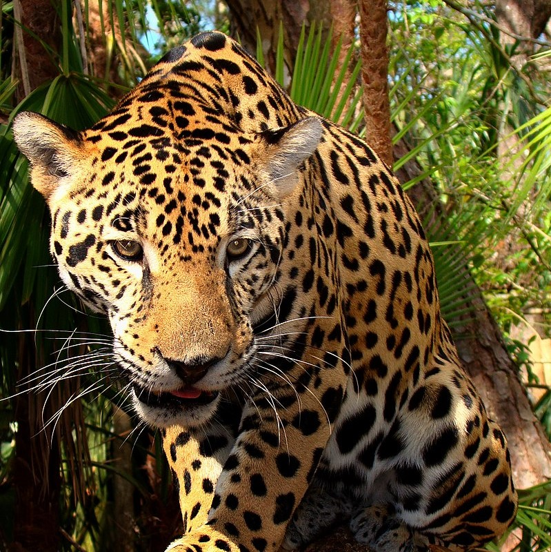

<!-- <!DOCTYPE html>
<html lang="es">

<head>
  <meta charset="UTF-8">
  <meta http-equiv="X-UA-Compatible" content="IE=edge">
  <meta name="viewport" content="width=device-width, initial-scale=1.0">
  <link rel="stylesheet" href="styles.css">
  <title>Clase 5</title>
</head>

<body class="">

  <h1>La familia de los felinos</h1>

  <div class="boton">
    <button onclick="darkMode()">🌙</button>
  </div>

  <div class="contenedor">
    <div class="item">
      
      <h2>El tigre</h2>
      <p>
        El tigre (Panthera tigris) es una de las especies de la subfamilia de los panterinos (familia Felidae)
        pertenecientes al género Panthera. Se encuentra solamente en el continente asiático; es un predador carnívoro y
        es
        la especie de félido más grande del mundo junto con el león pudiendo alcanzar ambos un tamaño comparable al de
        los
        fósiles de félidos de mayor tamaño.
      </p>
    </div>
    <div class="item">
      
      <h2>El leon</h2>
      <p>
        El león (Panthera leo) es un mamífero carnívoro de la familia de los félidos y una de las cinco especies del
        género Panthera. Los leones salvajes viven en poblaciones cada vez más dispersas y fragmentadas del África
        subsahariana (a excepción de las regiones selváticas de la costa del Atlántico y la cuenca del Congo) y una
        pequeña zona del noroeste de India
      </p>
    </div>
    <div class="item">
      
      <h2>El leopardo</h2>
      <p>
        El leopardo (Panthera pardus) es un mamífero carnívoro de familia de los félidos. Al igual que tres de los demás
        félidos del género Panthera: el león, el tigre y el jaguar, están caracterizados por una modificación en el
        hueso hioides que les permite rugir. También se lo conoce como pantera parda y, cuando presenta un pelaje
        completamente oscuro como pantera negra (melánico).
      </p>
    </div>
    <div class="item">
      
      <h2>La pantera negra</h2>
      <p>
        La pantera negra es una variación negra (melanismo) de varias especies de grandes félidos, en especial del
        leopardo (Panthera pardus) y del jaguar (Panthera onca). Pero cabe recalcar que no es una nueva especie, ni
        siquiera una subespecie, es simplemente una variación negra de estos animales.
      </p>
    </div>
    <div class="item">
      
      <h2>El jaguar</h2>
      <p>
        El jaguar, yaguar o yaguareté (Panthera onca) es un carnívoro félido de la subfamilia de los Panterinos y
        género Panthera. Es la única de las cinco especies actuales de este género que se encuentra en América. También
        es el mayor félido de América y el tercero del mundo, después del tigre (Panthera tigris) y el león (Panthera
        leo).
      </p>
    </div>
    <div class="item">
      
      <h2>El guepardo</h2>
      <p>
        El guepardo o chita (Acinonyx jubatus)1 es un miembro atípico de la familia de los félidos. Es el único
        representante vivo del género Acinonyx. Caza gracias a su vista y a su gran velocidad. Es el animal terrestre
        más veloz, ya que alcanza una velocidad punta de 115 km/h en carreras de hasta cuatrocientos o quinientos
        metros.
      </p>
    </div>
  </div>

  
  <script src="app.js"></script>

</body>

</html> -->